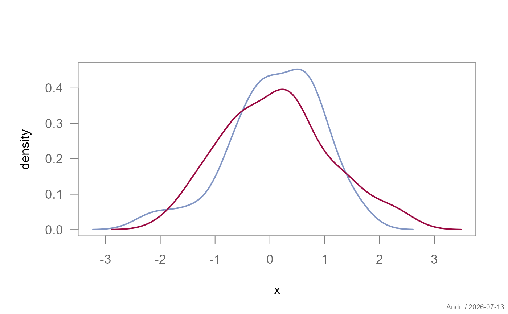
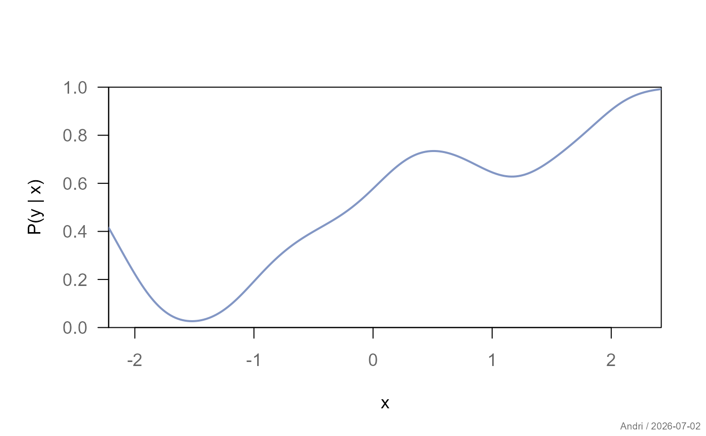
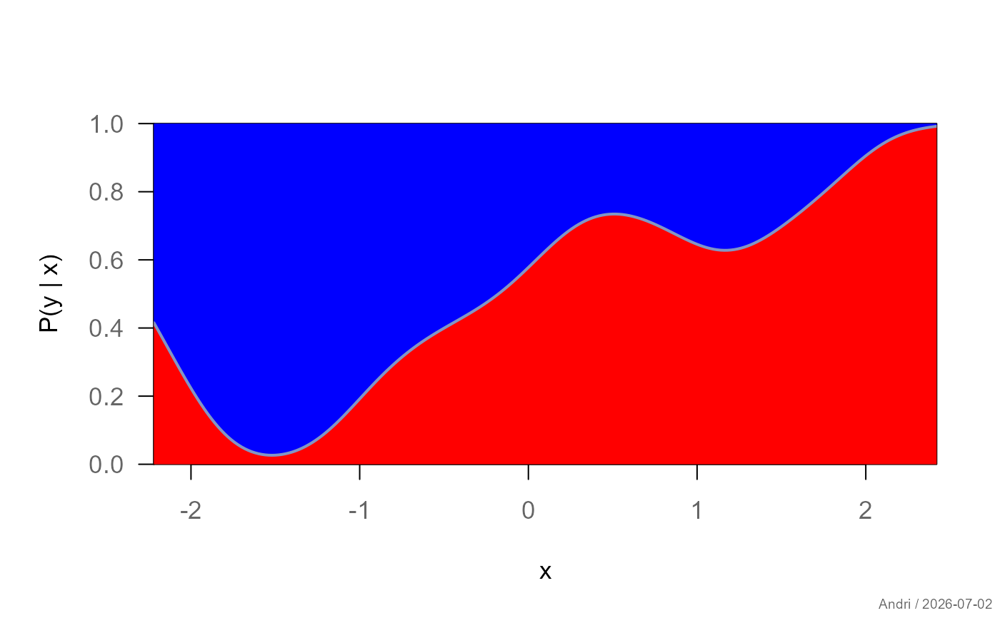
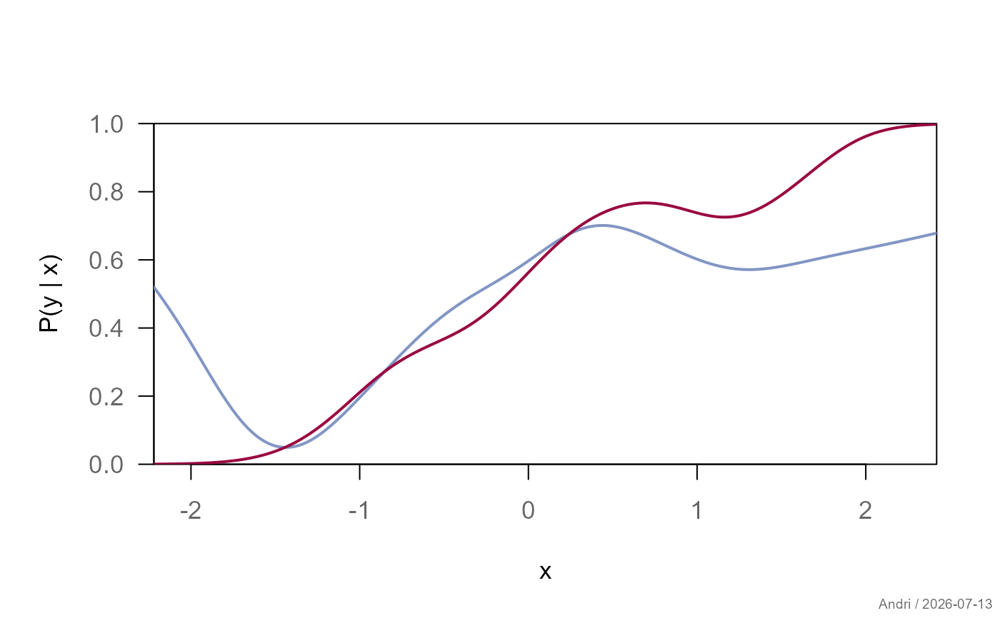

Draws kernel density estimates for one or more groups. Supports both classical density plots and conditional density plots.
Usage
plotDens(x, ...)
# S3 method for class 'formula'
plotDens(
formula,
data,
subset,
na.action = na.omit,
...,
main = NULL,
xlab = "",
ylab = NULL,
xlim = NULL,
ylim = NULL,
add = FALSE,
bw = "nrd0",
type = NULL,
col = NULL,
lwd = 2,
lty = 1,
fill = FALSE,
grid = NA,
stamp = TRUE
)Arguments
- x
A numeric vector or list of numeric vectors.
- ...
Additional data vectors (unnamed, default method) or graphical parameters passed to
par().- formula
A formula of the form
y ~ group,y ~ x(xnumeric, conditional density), ory ~ x | group.- data
Optional data frame.
- subset
Optional subset expression.
- na.action
Function to handle missing values.
- main, xlab, ylab
Plot labels.
- xlim, ylim
Axis limits.
- add
Logical; if
TRUE, adds to an existing plot.- bw
Bandwidth passed to
densityorcdplot.- type
Character string specifying the plot type. One of
"density","conditional", orNULL(default, determined byresolveFormula()'s design classification).- col
Line color(s).
- lwd
Line width(s).
- lty
Line type(s).
- fill
For
type = "density":FALSE(default, no fill),TRUE(translucent fill derived from each group'scolviaadjustcolor(col, alpha.f = 0.3)), or one or more explicit fill colors recycled over groups. Fortype = "conditional"on a single, unstratified, binary curve:TRUEfor cdplot-style grey shading, or a vector of 2 colors for the regions below/above the boundary curve.- grid
Logical,
NA, or list controlling background grid.- stamp
Controls the corner stamp.
.useTheme(default) resolves togetTheme()$stamp.TRUE/FALSE/NULL, or an explicit string, as for.withGraphicsState()(internal).
Details
The function defers entirely to resolveFormula()'s
design classification to pick a mode when type = NULL:
y ~ g(gcategorical) → density, one curve per group.y ~ x(xnumeric) → conditional density \(P(Y | X)\), a single curve - equivalent tocdplot(x, factor(y)).y ~ x | g→ conditional density, one curve per level ofg.
type can be set explicitly to override the default for a given
design (e.g. to force an error rather than silently doing the wrong
thing if a formula's shape is ambiguous).
Graphical elements such as grids are controlled via the unified plot
design system using bedrock::callIf() and .theme().
See also
density, cdplot,
resolveFormula
Other topic.graphics:
plotBubble(),
plotDens2D(),
plotRidge()
Other plot.univariate:
plotArea(),
plotBar(),
plotBox(),
plotCatDist(),
plotDensBox(),
plotDot(),
plotECDF(),
plotFdist(),
plotLines(),
plotQQ(),
plotViolin()
Examples
set.seed(1)
x <- rnorm(100)
g <- rep(c("A", "B"), each = 50)
# standard density (k = 2 groups)
plotDens(x ~ g)

# conditional density, single curve - auto-detected, no type= needed
y <- rbinom(100, 1, plogis(x))
plotDens(y ~ x)

# same, with cdplot-style fill
plotDens(y ~ x, fill = c("red", "blue"))

# conditional density, stratified by group
plotDens(y ~ x | g)
